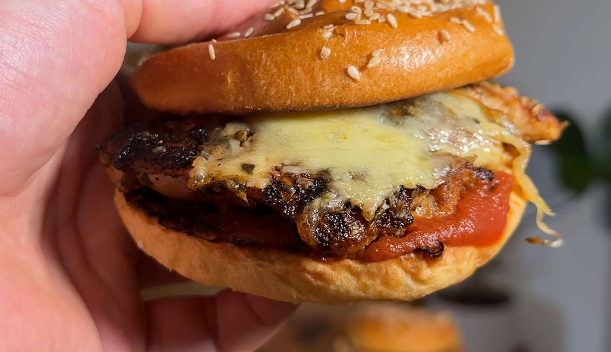

Lazy Parmy Sanga
Ingredients
- 140 g Chicken Thigh Fillet
- Aldi Brioche Bun
- 20 g Mozzarella Cheese
- 10 g Parmesan
- 40 g Passata/Marinara Sauce
- Salt, garlic powder, onion powder,
- oregano, rosemary & paprika
Instructions
- Season chicken thigh with salt, garlic powder, onion powder, oregano, rosemary & paprika
- 2. Grill in a hot pan for 5-6 minutes on each side
- Top cooked chicken with 20g mozzarella & 10g . Parmesan, add to air fryer, oven or broiler to melt the cheese
- Lather your toasted Aldi brioche buns with 20g of tomato sauce each side
- Add chicken & cheese to brioche bun & voila
Source PDF page 62